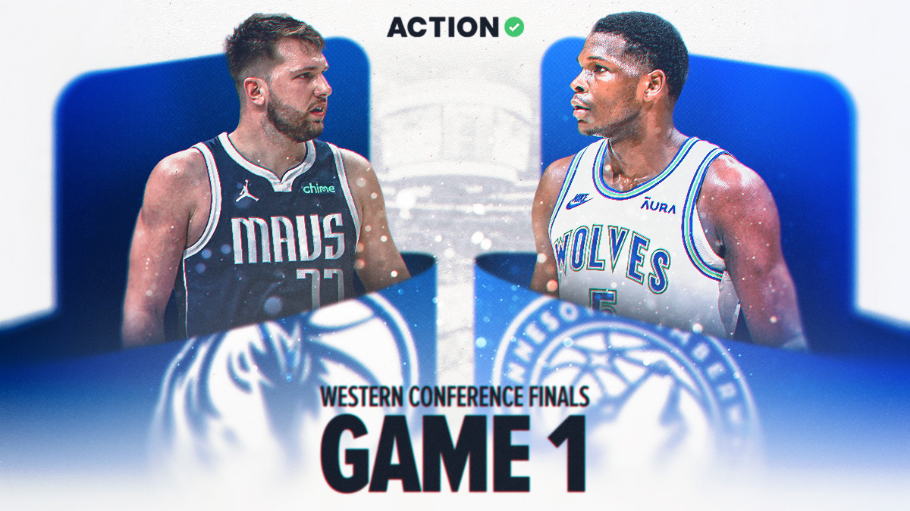
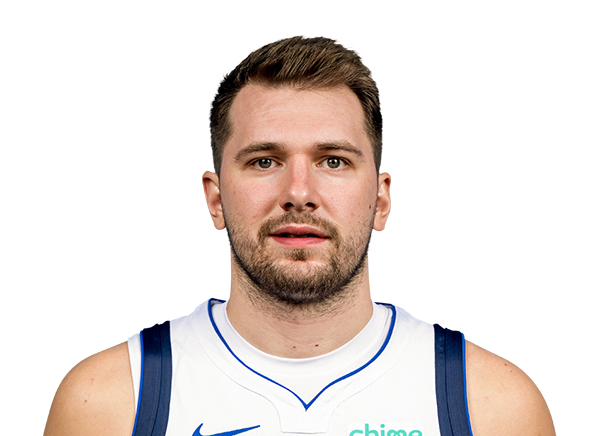
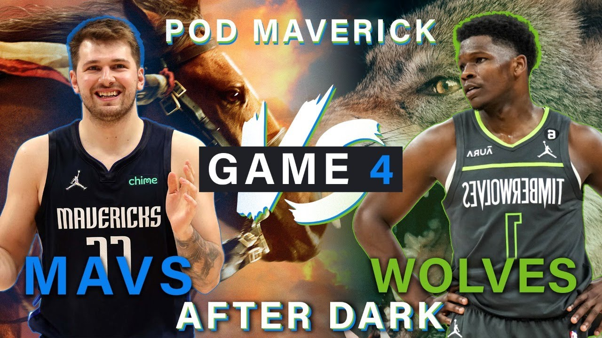
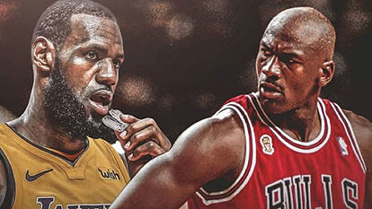

Noticias Recientes

DALLAS VS WOLVES: el equipo comandado por Luka Doncic y Kyrie Irving, lidera la serie 3-1, con grandes actuaciones de sus dos estrellas. Por el otro bando Anthony Edwards reafirma su gran momento con una gran actuación en el game 4, tambien destacamos a Nazz Red y Karl Anthony Towns.
Jugadores Destacados

Luka Doncic: Con 28 puntos, 15 rebotes y 10 asistencias, llegando a amagar con otro imposible cuando embocó en el aro un 3+1 a 13 segundos del final. Gran actuación del esloveno.

Karl Towns: Karl, el número uno del Draft 2015 y la cara de los T-Wolves desde entonces, se despojó de las dudas de los partidos 1, 2 y 3 y dio el zarpazo. En el minuto 43 convirtió dos triples desde la parte izquierda que hicieron la ventaja. Excelente levantada de nivel del dominicano con respecto a los primeros juegos.
Estadísticas y Análisis

Luka Doncic: 28 PTS - 15 REBOTES - 10 ASIST
Kyrie Irving: 16 PTS - 2 REBOTES - 4 ASIST
PJ Washington: 10 PTS - 5 REBOTES - 2 ASIST
Anthony Edwards: 29 PTS - 10 REBOTES - 9 ASIST
Karl Anthony Towns: 25 PTS - 5 REBOTES - 1 ASIST
Jaden Mcdaniels: 10 PTS - 1 REBOTES - 0 ASIST
Foro de Discusión
